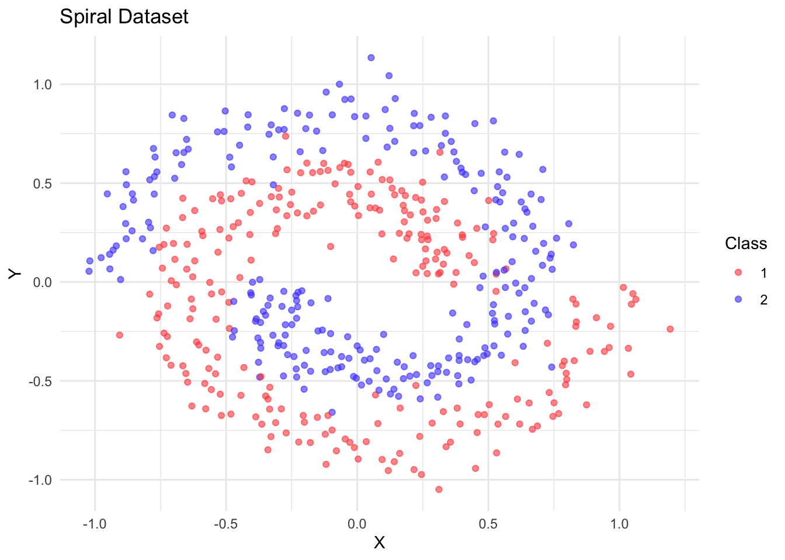
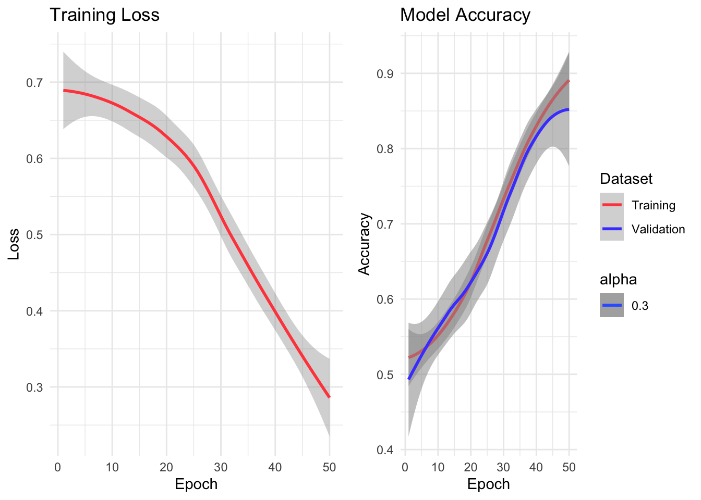
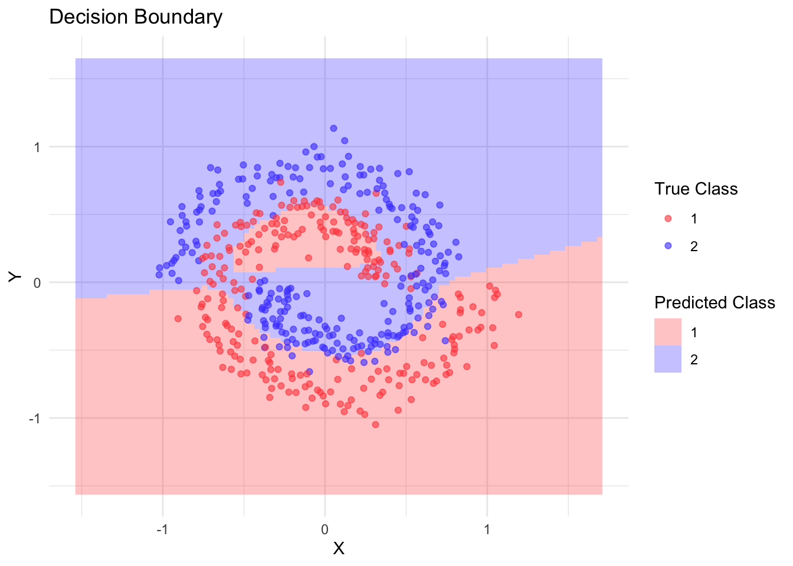

TODO: * Show some available modules like relu, convolutions, etc. Probably should build a CNN
From Linear Models to Neural Networks
In the previous notebook, we learned how to use torch’s autograd system to fit simple linear models. We manually:
Handled the weights.
Defined the forward path for the model.
Computed gradients and updated parameters with a simple update rule: a$sub_(lr * a$grad)
For more complex models, this approach becomes unwieldy. torch provides several high-level abstractions that make it easier to build and train neural networks:
nn_module: A class to organize model parameters and define the forward pass.
dataset and dataloader: Classes to handle data loading and batching (replaces our manual data handling)
optim: Classes that implement various optimization algorithms (replaces our manual gradient updates).
Let’s see how these components work together by building a neural network to classify spiral data. Note that we will only cover the optimizers briefly and will dedicate an extra notebook to them.
Neural Network Architecture with nn_module
The nn_module class serves several purposes:
Acts as a container for learnable parameters
Provides train/eval modes (important for layers like dropout and batch normalization)
Defines the forward pass of the model
Torch provides many common neural network modules out of the box. For example, the simple linear model we created earlier (\(\hat{y} = ax + b\)) could be implemented using the built-in nn_linear module:
Note that while nn_modules act like functions, they also have a state, most importantly their parameter weights.
It is straightforward to implement a custom nn_module, which requires implementing two key methods:
initialize: This method is the constructor that runs when the model is created. It defines the layers and their dimensions.
forward: This method defines how data flows through your network - it specifies the actual computation path from input to output.
We can implement a simple linear regression module ourselves.
nn_simple_linear =nn_module("nn_simple_linear",initialize =function() {# `self` refers to the object itself self$a =nn_parameter(torch_randn(1), requires_grad =TRUE) self$b =nn_parameter(torch_randn(1), requires_grad =TRUE) },forward =function(x) { self$a * x + self$b })
Note that nn_simple_linear is not an nn_module itself, but an nn_module_generator. To create the nn_module, we call it, which will call the $initialize() method defined above:
Further, note that we wrapped the trainable tensors in nn_parameter(), otherwise they will not be included in the $parameters. Only those weights that are part of the networks parameters and for which $requires_grad is TRUE will later be updated by the optimizer.
Besides parameters, neural networks can also have buffers (nn_buffer). Buffers are tensors that are part of the model’s state but don’t receive gradients during backpropagation. They’re commonly used for:
Running statistics in batch normalization (mean/variance)
Pre-computed constants
Besides the parameters and buffers, an nn_module is either in the train or eval state:
simple_linear$train()simple_linear$training
[1] TRUE
simple_linear$eval()simple_linear$training
[1] FALSE
Some nn_modules (such as batch normalization) behave differently depending on this mode and you need to ensure that the network is in the correct mode during the fitting process.
Another important method of a network is $state_dict(), which returns the network’s parameters and buffers.
The state dict can for example be used to save the weights of a network. Note that in general, you cannot simply save and load torch objects using saveRDS and readRDS:
Besides adding parameters and buffers to the network’s state dict by registering nn_parameters and nn_buffers in the module’s $initialize() method, you can also register other nn_modules.
The World is not Linear
While we have so far explained much of torch’s functionality using simple linear networks, the main idea of deep learning is to model complex, non-linear relationships. Below, we generate some non-linear synthetic spirals data for binary classification:
library(torch)library(ggplot2)library(mlbench)# Generate spiral dataset.seed(123)n <-500spiral <-mlbench.spirals(n, sd =0.1)# Convert to data framespiral_data <-data.frame(x = spiral$x[,1],y = spiral$x[,2],label =as.factor(spiral$classes))
The data looks like this:

While linear models can often be useful and served us well to explain the torch API, they are of course limited in capturing the complex, non-linear patterns often present in real-world data, especially unstructured types like images, text, audio, and video. Deep neural network often consist of many different layers (hence the name “deep”) and combine linear and non-linear layers with many other components which allows to represent highly complex functions. Traditional machine learning and statistics relies on manual feature engineering to transform raw inputs, whereas deep neural networks revolutionized this process by automatically learning hierarchical features directly from the data.
One challenging problem is how to define a neural network architecture for a given problem. While neural networks with a single hidden layer can theoretically approximate any continuous function, the practical challenge lies in finding these solutions efficiently. This is where architectural choices and their associated inductive biases become crucial.
An inductive bias represents the set of assumptions that a learning algorithm uses to predict outputs given inputs that it has not encountered during training. These biases help the model generalize beyond its training data by favoring certain solutions over others.
Some examples of inductive biases in different neural network architectures:
Convolutional Neural Networks (CNNs)
The central component of a CNN is the convolutionsl layer:
Convolutional Layer
CNNs encode several strong inductive biases about visual data:
Locality: Nearby pixels are more likely to be related than distant ones
Translation invariance: Features should be detected regardless of their position
Hierarchical composition: Complex patterns are built from simpler ones
These biases make CNNs particularly effective for image-related tasks because they match our understanding of how visual information is structured.
Transformers
While many different flavours of transformer architectures exist, the main idea is the (self-)attention mechanism:
Transformer (the architecture that drives language models such as GPT-4) architectures, commonly used in natural language processing, have different inductive biases:
Non-locality: Any token can directly interact with any other token
Position awareness: Sequential order matters but is explicitly encoded
Attention-based relationships: Important connections between elements are learned dynamically
This makes Transformers well-suited for tasks where long-range dependencies are important, like understanding language or analyzing sequences.
MLPs (like our spiral network)
The different layers in a Multi Layer Perceptron (MLP) consist of an affine-linear transformation followed by a non-linear function such as a ReLU activcation function:
Our simple multi-layer perceptron has minimal inductive biases:
Continuity: Similar inputs should produce similar outputs
Hierarchical feature learning: Each layer builds increasingly abstract representations
This flexibility makes MLPs general-purpose learners, but they may need more data or parameters to learn patterns that specialized architectures can discover more efficiently.
For our problem at hand, we will go with a simple MLP with three hidden layers:
Instead of creating an nn_relu() during network initialization, we could instead also have used the nnf_relu function directly in the forward pass. This is possible for the activation functions as it has no trainable weights.
In torch in general, nn_ functions create module instances that can maintain state (like trainable weights or running statistics), while nnf_ functions provide the same operations as pure functions without any state.
Furthermore, for simple sequential networks, we could have also used nn_sequential to defined it instead of nn_module. This allows you to chain layers together in a linear fashion without explicitly defining the forward pass.
The image below visualizes the general structure of this network:
// Source: https://tikz.net/neural_networks/
We can create a concrete network by calling the resulting nn_module_generator and specifying the required parameters.
# Create model instancemodel <-nn_spiral_net(input_size =2,hidden_size =64,output_size =2)print(model)
At this point, we also want to briefly talk about the output – the ‘head’ of the network – and loss functions.
Classification
The output dimension of a classification network is usually the number of classes, i.e. 2 in our case. What is output, however, is not probabilities, but logit scores To convert a vector of scores to probabilities, we apply the softmax function:
The loss function is most commonly cross-entropy. For a true probability vector \(p\) and a predicted probability vector \(q\), the cross-entropy is defined as:
\[ \text{CE}(p, q) = - \sum_i p_i \log(q_i) \]
Note that when the true probability \(p\) is either \(1\) for the true class or \(0\) for all other classes, the cross-entropy can be simplified to:
\[ \text{CE}(p, q) = - \log(q_{y}) \]
where \(y\) is the true class and \(q_y\) its predicted probability.
To calculate the cross-entropy loss, we need to pass the predicted scores and the true class indices to the loss function. The classes are expected to be labeled from 1 to C for a total of C classes.
For regression tasks, the final layer is almost always a simple linear layer with a single output. We can construct a version of the spiral network for regression by changing the final layer to a linear layer with a single output:
The dataset and dataloader classes address separate concerns:
dataset: Handles data storage and access to individual samples. The methods are:
.getitem(): Returns a single sample. It does not matter how: An image could be read from disk or a record could be retrieved from a database.
.getbatch() (optional): returns a full batch
.length(): Returns dataset size
dataloader: Given a dataset, handles batching, shuffling, and parallel loading.
We will start by creating a custom dataset class for the spirals problem. In its $initialize() method it expects a data.frame with columns "x", "y", and "label". We then convert these two tensors and store it in the object.
Below, we chose to implement .getitem(), but we could have also implemented .getbatch(), which gets not one index but a vector of indices. Note that implementing $.getbatch() can have performance benefits.
For the spiral problem at hand, we could have also used the torch::tensor_dataset class.
Now that we have defined the dataset class generator, we will create a train and validation dataset:
Training and validation datasets serve different purposes: - Training data is used to update the model’s parameters and learn patterns - Validation data helps evaluate how well the model generalizes to unseen data, detect overfitting, and guide model selection decisions
Validation in deep learning is crucial for: 1. Detecting overfitting: If training loss decreases but validation loss increases, the model is likely overfitting to the training data 2. Model selection: We can use validation performance to choose the best model architecture and hyperparameters 3. Early stopping: We can stop training when validation performance stops improving to prevent overfitting
The validation set acts as a proxy for unseen data, giving us an estimate of how well our model will generalize to new examples. It’s important that we don’t use this data for training, keeping it completely separate to get an unbiased evaluation of model performance.
# Split data into train and validation setstrain_ids =sample(1:500, 400)train_data <- spiral_data[train_ids,]valid_data <- spiral_data[-train_ids,]# Create datasetstrain_dataset <-spiral_dataset(train_data)valid_dataset <-spiral_dataset(valid_data)
We can access the individual elements via the $.getitem() method:
It is also possible to manually iterate over the batches by first creating an iterator using torch::dataloader_make_iter() and then calling dataloader_next() until NULL is returned, which means the iterator is exhausted.
iter =dataloader_make_iter(train_loader)n_batches <-0while (!is.null(batch <<-dataloader_next(iter))) { n_batches <- n_batches +1}print(n_batches)
[1] 7
Training Loop
In order to train our MLP on the data at hand, we also need to specify how the gradients will be used to update the network parameters, which is the task of the optimizer. While more complex optimizers will be covered in the next section, we will now use a vanilla SGD optimizer with a learning rate of 0.3 and further pass it the parameters of the model we want to optimize.
optimizer =optim_sgd(model$parameters, lr =0.3)
For the training loop we only need to methods of the optimizer class:
The $step() method updates the weights based on the gradients and the optimizer configuration (e.g. the learning rate).
Further, the $zero_grad() method sets the gradients of all parameters handled by the optimizer to \(0\).
Now we can put everything together:
# Training settingsn_epochs <-50device <-if (cuda_is_available()) "cuda"else"cpu"# Move model to devicemodel$to(device = device)# Training loophistory =list(loss =numeric(), train_acc =numeric(), valid_acc =numeric())for(epoch inseq_len(n_epochs)) { model$train() # Set to training mode# training loop train_losses <-numeric() train_accs <-numeric() coro::loop(for(batch in train_loader) {# Move batch to device x <- batch$x$to(device = device) y <- batch$y$to(device = device)# Forward pass output <-model(x) loss <-nnf_cross_entropy(output, y)# Backward pass optimizer$zero_grad() loss$backward() param =as_array(model$parameters[[1]]) optimizer$step()# Store training losses train_losses <-c(train_losses, loss$item()) train_accs <-c(train_accs, mean(as_array(output$argmax(dim =2) == y))) }) history$loss <-c(history$loss, mean(train_losses)) history$train_acc <-c(history$train_acc, mean(train_accs))# validation loop# Set model to evaluation mode model$eval() valid_accs <-numeric() coro::loop(for(batch in valid_loader) { x <- batch$x$to(device = device) y <- batch$y$to(device = device) output <-with_no_grad(model(x)) valid_acc <-as_array(output$argmax(dim =2) == y) valid_accs =c(valid_accs, mean(valid_acc)) }) history$valid_acc <-c(history$valid_acc, mean(valid_accs))}
The decision boundary plot shows how our neural network learned to separate the spiral classes, demonstrating its ability to learn non-linear patterns that would be impossible with a simple linear model.

We can also visualize the predictions of our final network:

This example demonstrates how torch’s high-level components work together to build and train neural networks:
nn_module manages our parameters and network architecture
The optimizer handles parameter updates
The dataset and dataloader classes can be used together for loading data


 // Source: https://tikz.net/neural_networks/
// Source: https://tikz.net/neural_networks/